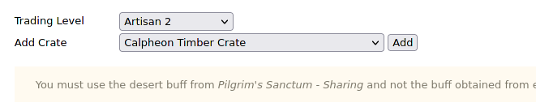
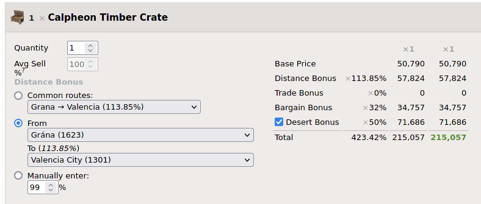
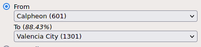

Welcome on my webpage!
-
Hello everyone, My name is Windsake and the site is about Black desert online's
trading lifeskill.
-
Obviously a lot of great sites exist already which i do not even dream of surpassing,
the page is for information i felt like sharing or could not find elsewhere
and had to look up myself in the game.
- I will also put out my methods on doing trading, which might not be what is the best,
but it will surely be the most fun in my eyes.
I'm playing on the EU region, my main server being Velia2.
- If you are curious about my character skill level(currently
- Master 8
- ),you can take a look at my family sheet here:
WindPalace
- I'm mostly doing active trading for xp, which i found very fast and you can
research your next move while you are autopathing between the cities.
- It gives you a lot of xp based on the distance between the nodes you are trading with
(the distance is set, no matter how big of a detour you do)
- You can see the distance bonus of your chosen nodes if you look at Famme's site
.
- You just pick a skill level(for the distance bonus, you can pick any), add a crate and the node selector will appear:
-



- Trade Managers restock their trade items about 30m-1h after you first "bought" their wares.
Exact time will be found out soon!